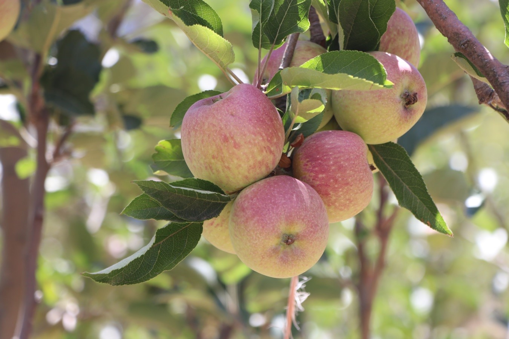
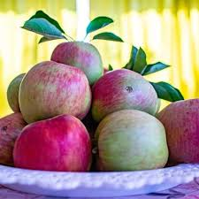
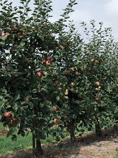
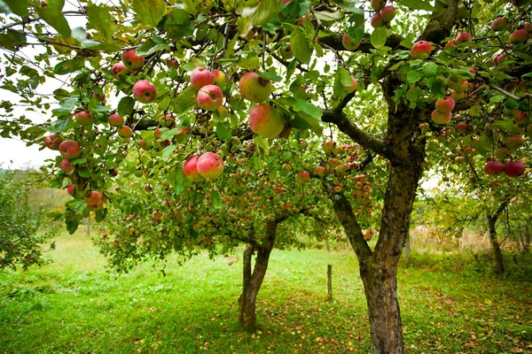
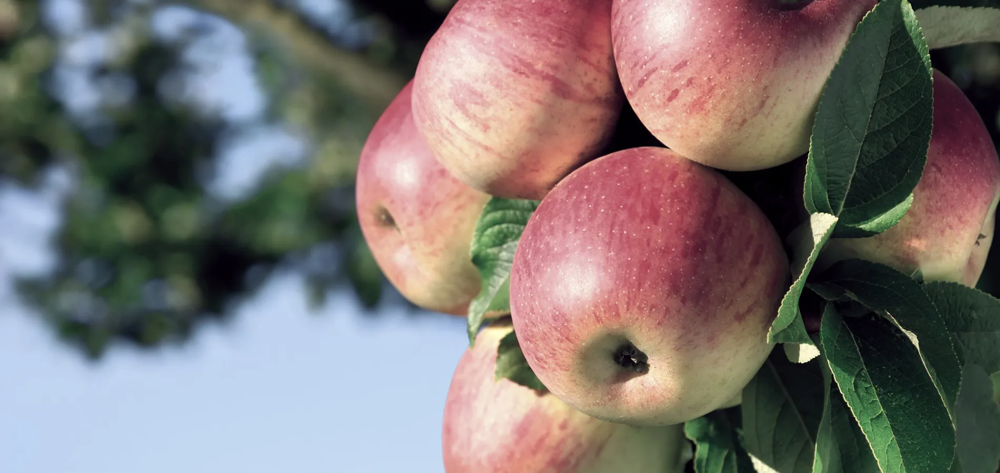
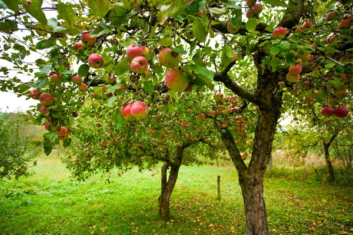
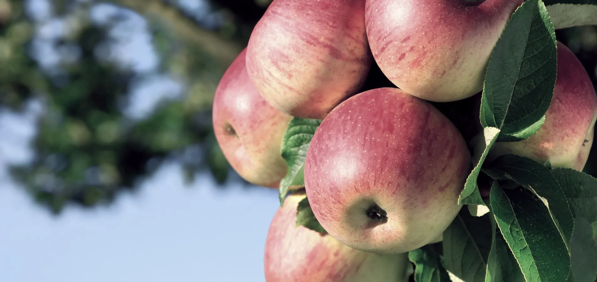

Árbol de Manzana
El manzano es un árbol que se adapta a climas fríos y produce frutos nutritivos.



 



Tiempo de crecimiento: 4 a 6 años.
Clima ideal: Frío o templado.
Cuidados: Poda anual, riego constante y buen drenaje.
Importancia: Fuente de alimento y sombra.
⬅ Regresar